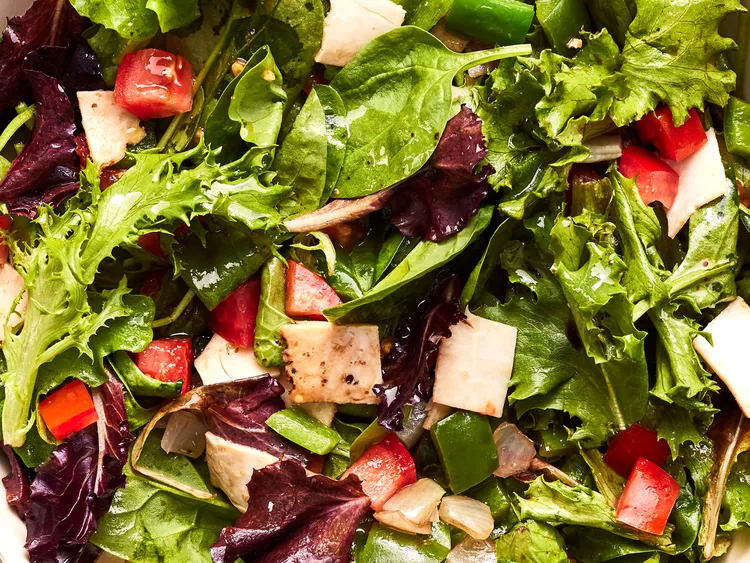

Green Salad

Description
This green salad is good for a side dish or a meal on its own.
Ingredients
- ½ cup chopped onion
- ½ cup chopped green bell pepper
- 2 (10 ounce) packages mixed salad greens
- 4 thinly sliced chicken deli meat, chopped
- 1 tomato, chopped
- ¼ teaspoon onion powder
- 3 dashes garlic powder
- 2 pinches salt and ground black pepper to taste
- 3 tablespoons balsamic vinaigrette salad dressing
Steps
- Place onion and bell pepper in a microwave-safe bowl; heat in microwave on high until soft, about 1 to 2 minutes. Set
aside to cool.
- Combine onion, bell pepper, salad greens, deli meat, and tomato in a large salad bowl. Sprinkle with onion powder,
garlic powder, salt, and black pepper; toss well to mix.
- Pour on salad dressing; toss well and serve.
Return Home